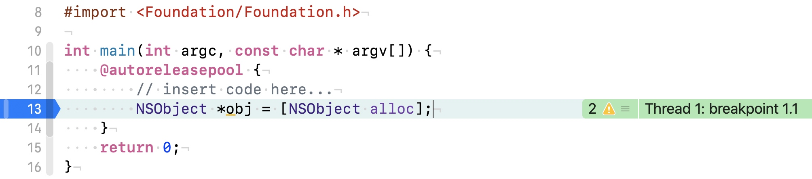
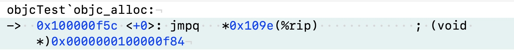

这篇文章基于 objc4-779.1 进行调试，代码可以从苹果官方开源代码列表找到，也可以直接使用我编译通过的版本 objc4。
类与对象
对象的初始化
一般来讲，我们新建一个对象的操作通常是：
NSObject *obj = [[NSObject alloc] init];
这个过程发生了什么？对象的本质又是什么呢？我们来一步步进行拆解。这句初始化语句涉及到了两个函数：+ alloc() 和 - init()。这两个函数都分别进行了什么操作呢？
alloc 函数解析
首先我们来针对 + alloc 函数进行调试。先把对 - init（） 的调用删掉，只留下 + alloc() 的部分，进行断点。

常用的代码跟踪方式：
- Xcode 菜单栏依次点击 Debug -> Debug Workflow -> Always show Disassembly
- control + step into
- 符号断点，如+ alloc()
这里采用 control + step into 的方式。

可以看到，下一个调用的函数为 objc_alloc。
源码如下：
id
objc_alloc(Class cls)
{
return callAlloc(cls, true/*checkNil*/, false/*allocWithZone*/);
}
callAlloc 函数解析
callAlloc 源码如下：
// Call [cls alloc] or [cls allocWithZone:nil], with appropriate
// shortcutting optimizations.
static ALWAYS_INLINE id
callAlloc(Class cls, bool checkNil, bool allocWithZone=false)
{
#if __OBJC2__
if (slowpath(checkNil && !cls)) return nil;
if (fastpath(!cls->ISA()->hasCustomAWZ())) {
return _objc_rootAllocWithZone(cls, nil);
}
#endif
// No shortcuts available.
if (allocWithZone) {
return ((id(*)(id, SEL, struct _NSZone *))objc_msgSend)(cls, @selector(allocWithZone:), nil);
}
return ((id(*)(id, SEL))objc_msgSend)(cls, @selector(alloc));
}